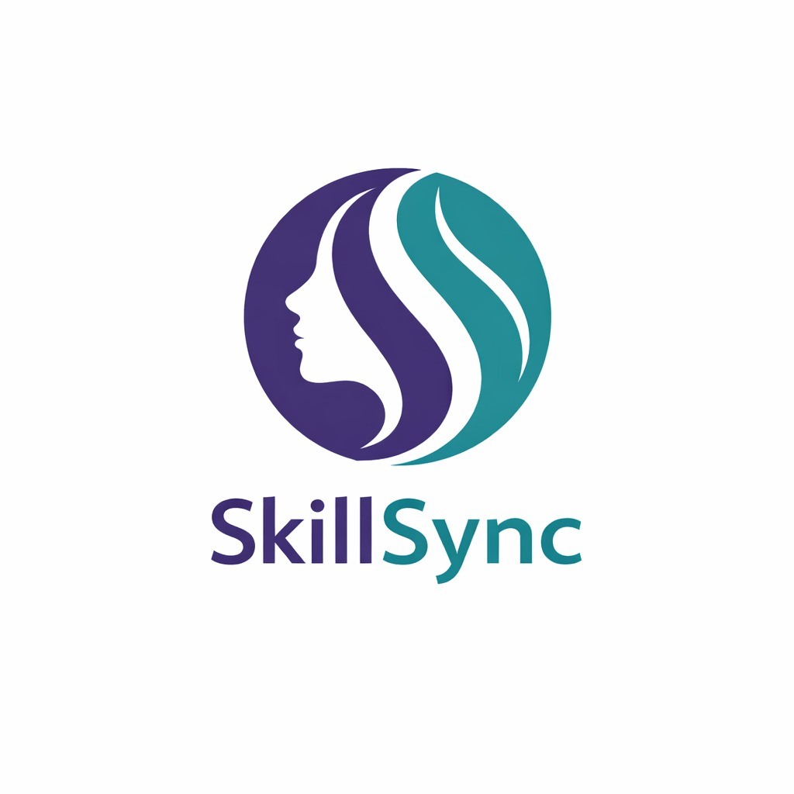

Connecting rural women's skills with real market demand and empowering them financially.
Get Started
SkillSync is a digital platform designed to connect rural women’s skills with real market demand and income opportunities. It helps women identify high-demand skills in their region and guides them on where to sell their products or services. By using technology and data-driven insights, SkillSync promotes financial independence and entrepreneurship among rural communities. Our goal is to empower women through skill development, market access, and sustainable livelihood opportunities.
To build an inclusive digital ecosystem that empowers rural women with equal economic opportunities. To become a trusted platform that transforms traditional skills into modern income sources. To encourage self-reliance and confidence among women through technology-driven solutions. To support sustainable rural development by connecting talent with market demand.